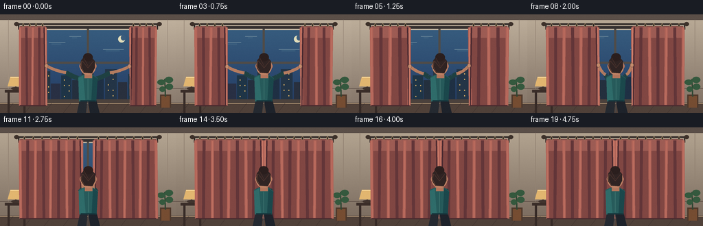
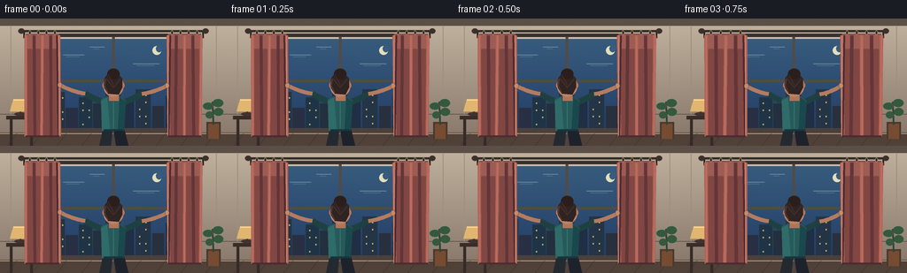

CODING AGENTS AS PIXEL WORLD MODELS
traex/GPT-5.6-Sol · motion_rationality_0054
点击播放 · 原生 RGB 像素
逐轮保存的候选
回放视频、检查图与代码变化。
每份候选均可单独播放。实际图片检查记录在下方工具轨迹中。
候选 01播放与检查图
点击播放 · 原生 RGB 像素

展开代码变化
--- 上一保存版本
+++ 本次保存版本
@@ -0,0 +1,200 @@
+from pathlib import Path
+import math
+import numpy as np
+from PIL import Image, ImageDraw, ImageFilter
+import artifact_io
+
+W,H,N,S = 256,144,20,4
+rng=np.random.default_rng(54)
+
+def sc(v): return int(round(v*S))
+def pts(seq): return [(sc(x),sc(y)) for x,y in seq]
+def rect(d, box, **kw): d.rectangle(tuple(sc(v) for v in box), **kw)
+def ellipse(d, box, **kw): d.ellipse(tuple(sc(v) for v in box), **kw)
+def line(d, xy, **kw):
+ if 'width' in kw: kw['width']=sc(kw['width'])
+ d.line(pts(xy), **kw)
+def poly(d, xy, **kw): d.polygon(pts(xy), **kw)
+
+def smooth(x):
+ x=max(0,min(1,x)); return x*x*(3-2*x)
+
+def gradient_image(top,bottom):
+ y=np.linspace(0,1,H*S)[:,None,None]
+ a=np.array(top)[None,None,:]*(1-y)+np.array(bottom)[None,None,:]*y
+ return Image.fromarray(np.tile(a,(1,W*S,1)).astype(np.uint8),'RGB')
+
+def curtain(draw, side, edge, sway, p):
+ # Full-height fabric panel, with a gently rippled free edge and hem.
+ outer=29 if side=='L' else 227
+ sign=1 if side=='L' else -1
+ inner=edge
+ edge_pts=[]
+ for y in np.linspace(18,133,24):
+ ripple=(1.15*math.sin(y*.18+sway)+.35*math.sin(y*.49))* (0.25+0.75*(y/133))
+ edge_pts.append((inner+sign*ripple,y))
+ if side=='L':
+ shape=[(29,17),(inner,17)]+edge_pts[1:]+[(inner-1,134),(29,134)]
+ else:
+ shape=[(227,17),(inner,17)]+edge_pts[1:]+[(inner+1,134),(227,134)]
+ poly(draw,shape,fill=(129,71,67))
+ # warm top glow and lower shadow
+ if side=='L': rect(draw,(29,18,inner,34),fill=(157,92,84))
+ else: rect(draw,(inner,18,227,34),fill=(157,92,84))
+ # Pleats spread over current cloth width. Broad alternating highlights sell textile volume.
+ lo,hi=(29,inner) if side=='L' else (inner,227)
+ width=max(2,hi-lo)
+ folds=max(4,int(width/11))
+ for k in range(folds+1):
+ x=lo+width*k/folds
+ phase=math.sin(k*2.2+sway)
+ x2=x+phase*1.1
+ col=(178,101,89) if k%2==0 else (99,54,57)
+ ww=max(1.0,width/folds*.34)
+ poly(draw,[(x-ww/2,19),(x+ww/2,19),(x2+ww*.48,133),(x2-ww*.48,133)],fill=col)
+ # very slim ridge highlight
+ if k%2==0: line(draw,[(x,20),(x2,132)],fill=(203,124,105),width=.55)
+ # translucent shadow along moving edge and seam highlight
+ xoff=-2.5 if side=='L' else 2.5
+ line(draw,[(inner+xoff,19),(inner+xoff*.3,133)],fill=(77,43,49),width=2)
+ line(draw,[(inner,19),(inner,132)],fill=(219,139,116),width=.7)
+ # weighted hem
+ line(draw,[(lo,133),(hi,133)],fill=(76,44,48),width=2)
+ # rings glide along rod and grow in count as panel spreads
+ count=max(4,int(width/13)+1)
+ for k in range(count):
+ x=lo+(k+.5)*width/count
+ ellipse(draw,(x-1.4,13.2,x+1.4,18.3),fill=(48,42,40),outline=(189,158,112),width=sc(.55))
+
+def bezier(a,b,c,steps=18):
+ out=[]
+ for t in np.linspace(0,1,steps):
+ u=1-t
+ out.append((u*u*a[0]+2*u*t*b[0]+t*t*c[0],u*u*a[1]+2*u*t*b[1]+t*t*c[1]))
+ return out
+
+def render(i):
+ # Curtain closure occurs deliberately over the first 3.5 sec; final second shows release/settling.
+ p=smooth(min(i,14)/14)
+ release=smooth(max(0,(i-14)/5))
+ gap_left=66.5+(126.1-66.5)*p
+ gap_right=189.5-(189.5-129.9)*p
+ # Room darkens mildly as blue window light is blocked.
+ dim=int(13*p)
+ im=gradient_image((195-dim,180-dim,160-dim),(132-dim,117-dim,105-dim))
+ d=ImageDraw.Draw(im)
+ # wall paneling and soft architectural lines
+ rect(d,(0,0,256,8),fill=(91,79,72))
+ line(d,[(0,108),(256,108)],fill=(106-dim,91-dim,82-dim),width=1)
+ for x in (12,244): line(d,[(x,8),(x,108)],fill=(159-dim,143-dim,127-dim),width=1)
+ # window recess and trim
+ rect(d,(38,17,218,130),fill=(55,50,49))
+ rect(d,(42,21,214,127),fill=(206-dim,192-dim,170-dim))
+ # evening outside gradient clipped into window
+ for yy in range(sc(23),sc(124)):
+ q=(yy/sc(1)-23)/101
+ col=(int(55-17*q),int(92-29*q),int(126-23*q))
+ d.line([(sc(45),yy),(sc(211),yy)],fill=col,width=1)
+ # moon, clouds
+ ellipse(d,(172,31,182,41),fill=(227,222,187))
+ ellipse(d,(176,30,183,38),fill=(58,92,124))
+ for cx,cy,cw in [(71,41,24),(150,51,30),(101,32,17)]:
+ line(d,[(cx,cy),(cx+cw,cy)],fill=(103,132,151),width=1)
+ line(d,[(cx+4,cy+2),(cx+cw-6,cy+2)],fill=(72,109,136),width=1)
+ # city skyline / lit windows
+ buildings=[(45,94,58,124),(59,83,73,124),(74,101,88,124),(89,89,104,124),(105,96,117,124),(119,76,136,124),(138,91,151,124),(153,80,170,124),(172,99,185,124),(187,87,210,124)]
+ for j,(x0,y0,x1,y1) in enumerate(buildings):
+ col=(31+j%3*5,48+j%2*5,62+j%4*3)
+ rect(d,(x0,y0,x1,y1),fill=col)
+ if j in (1,3,5,7,9):
+ for wy in range(int(y0+6),123,8):
+ for wx in range(int(x0+4),int(x1-2),7):
+ if (wx+wy+j)%3: rect(d,(wx,wy,wx+1.2,wy+1.5),fill=(222,178,101))
+ # sill and window mullions
+ rect(d,(39,124,217,130),fill=(75,65,60))
+ rect(d,(126.5,21,129.5,124),fill=(80,76,72))
+ rect(d,(42,69,214,72),fill=(80,76,72))
+ line(d,[(43,22),(43,125)],fill=(229-dim,215-dim,192-dim),width=2)
+ line(d,[(213,22),(213,125)],fill=(91,82,75),width=2)
+ # floor
+ poly(d,[(0,129),(256,129),(256,144),(0,144)],fill=(80,65,57))
+ line(d,[(0,130),(256,130)],fill=(185,157,124),width=1)
+ for x in range(-20,280,28): line(d,[(x,144),(x+11,130)],fill=(63,51,47),width=.6)
+ # left side table and glowing lamp, establishes warm interior lighting
+ rect(d,(7,110,40,114),fill=(58,45,40))
+ rect(d,(11,114,14,144),fill=(55,43,39)); rect(d,(34,114,37,144),fill=(55,43,39))
+ line(d,[(23,109),(23,92)],fill=(69,56,50),width=2)
+ ellipse(d,(16,106,30,110),fill=(65,52,46))
+ poly(d,[(15,91),(31,91),(35,105),(11,105)],fill=(226,182,112))
+ line(d,[(15,92),(31,92)],fill=(255,224,162),width=1)
+ # plant silhouette right
+ rect(d,(233,117,249,136),fill=(78,56,43)); rect(d,(235,119,247,136),fill=(118,77,50))
+ line(d,[(241,120),(240,94)],fill=(48,70,51),width=2)
+ for box in [(229,95,241,103),(240,91,252,100),(232,105,241,113),(241,101,252,110)]:
+ ellipse(d,box,fill=(53,89,62))
+ # curtain rod, brackets, finials behind the drapes
+ line(d,[(25,14),(231,14)],fill=(50,43,40),width=2.5)
+ line(d,[(27,15),(27,22)],fill=(45,39,37),width=2)
+ line(d,[(229,15),(229,22)],fill=(45,39,37),width=2)
+ ellipse(d,(20.5,11,27.5,17),fill=(61,49,42)); ellipse(d,(228.5,11,235.5,17),fill=(61,49,42))
+ # actual moving curtains
+ curtain(d,'L',gap_left,i*.13,p)
+ curtain(d,'R',gap_right,1.7+i*.12,p)
+ # subtle contact shadows cast by person on curtain
+ shadow=Image.new('RGBA',im.size,(0,0,0,0)); sd=ImageDraw.Draw(shadow)
+ ellipse(sd,(sc(108),sc(78),sc(149),sc(143)),fill=(25,18,22,45))
+ shadow=shadow.filter(ImageFilter.GaussianBlur(sc(3)))
+ im=Image.alpha_composite(im.convert('RGBA'),shadow).convert('RGB'); d=ImageDraw.Draw(im)
+ # Person, back-facing and clearly using both hands. Body has a slight weight shift.
+ shift=1.2*math.sin(p*math.pi)
+ cx=128+shift
+ # legs behind torso
+ poly(d,[(116+shift,125),(127+shift,125),(125+shift,144),(112+shift,144)],fill=(37,42,49))
+ poly(d,[(128+shift,125),(140+shift,124),(145+shift,144),(131+shift,144)],fill=(30,35,43))
+ line(d,[(128+shift,127),(127+shift,143)],fill=(72,72,75),width=1)
+ # hands follow curtain leading edges until closed, then lower naturally
+ lh=(gap_left+1,75+1.3*math.sin(i*.5))
+ rh=(gap_right-1,75+1.1*math.sin(i*.5+.8))
+ lowered_l=(117+shift,102); lowered_r=(139+shift,102)
+ lh=(lh[0]*(1-release)+lowered_l[0]*release,lh[1]*(1-release)+lowered_l[1]*release)
+ rh=(rh[0]*(1-release)+lowered_r[0]*release,rh[1]*(1-release)+lowered_r[1]*release)
+ ls=(116+shift,94); rs=(140+shift,94)
+ # elbows bow down/out while open, then tuck inward
+ le=(96+28*p+shift,85+5*p+9*release)
+ re=(160-28*p+shift,85+5*p+9*release)
+ # back arm shadows then warm skin forearms and teal sleeves
+ line(d,bezier(ls,((ls[0]+le[0])/2,ls[1]-3),le),fill=(31,65,66),width=7)
+ line(d,bezier(rs,((rs[0]+re[0])/2,rs[1]-3),re),fill=(31,65,66),width=7)
+ line(d,bezier(le,((le[0]+lh[0])/2,le[1]-2),lh),fill=(181,124,96),width=4.4)
+ line(d,bezier(re,((re[0]+rh[0])/2,re[1]-2),rh),fill=(181,124,96),width=4.4)
+ # hands wrap around the curtain edges
+ ellipse(d,(lh[0]-2.6,lh[1]-3.2,lh[0]+2.6,lh[1]+3.2),fill=(197,140,108),outline=(118,77,69),width=sc(.45))
+ ellipse(d,(rh[0]-2.6,rh[1]-3.2,rh[0]+2.6,rh[1]+3.2),fill=(197,140,108),outline=(118,77,69),width=sc(.45))
+ # torso, waist and shirt folds
+ poly(d,[(114+shift,91),(121+shift,88),(135+shift,88),(142+shift,93),(140+shift,127),(115+shift,127)],fill=(39,91,91))
+ poly(d,[(114+shift,93),(121+shift,89),(124+shift,126),(115+shift,127)],fill=(47,108,106))
+ poly(d,[(135+shift,89),(142+shift,94),(140+shift,127),(133+shift,125)],fill=(27,72,76))
+ line(d,[(128+shift,94),(128+shift,124)],fill=(67,121,116),width=.7)
+ line(d,[(117+shift,126),(139+shift,126)],fill=(22,55,61),width=2)
+ # neck, ears, head and hair bun
+ rect(d,(123+shift,82,134+shift,93),fill=(177,117,92))
+ ellipse(d,(116.5+shift,63,139.5+shift,88.5),fill=(190,130,101))
+ ellipse(d,(115.5+shift,72,120.5+shift,79),fill=(180,119,94)); ellipse(d,(135.5+shift,72,140.5+shift,79),fill=(180,119,94))
+ # dark hair mass with soft strands, seen from behind
+ poly(d,[(117+shift,75),(118+shift,67),(123+shift,61),(133+shift,62),(138+shift,68),(138+shift,78),(134+shift,86),(122+shift,85),(118+shift,79)],fill=(48,36,35))
+ ellipse(d,(121+shift,56.5,135+shift,68.5),fill=(43,31,30))
+ line(d,[(120+shift,68),(128+shift,78),(136+shift,68)],fill=(75,51,45),width=.7)
+ line(d,[(122+shift,64),(128+shift,75)],fill=(89,58,49),width=.55)
+ # Hair rim from the warm lamp
+ line(d,[(119+shift,68),(118+shift,76),(122+shift,84)],fill=(116,75,58),width=.7)
+ # soft grain keeps gradients from looking sterile
+ arr=np.asarray(im).astype(np.int16)
+ gr=rng_for(i).normal(0,0.75,arr.shape[:2])[:,:,None]
+ arr=np.clip(arr+gr,0,255).astype(np.uint8)
+ im=Image.fromarray(arr,'RGB').resize((W,H),Image.Resampling.LANCZOS)
+ return np.asarray(im,dtype=np.uint8)
+
+def rng_for(i): return np.random.default_rng(5400+i)
+
+frames=np.stack([render(i) for i in range(N)],axis=0)
+artifact_io.save(frames,Path(__file__).resolve().parent)
可观测工具轨迹
实际执行的命令与返回图片。
命令 1exit 0
/bin/bash -lc "cat prompt.txt && printf '\\n---RULES---\\n' && cat GENERATION_RULES.md && printf '\\n---SPEC---\\n' && cat task_spec.json"
命令 2exit 0
/bin/bash -lc "find . -maxdepth 2 -type f -printf '%p\\n' | sort | head -200 && printf '\\nTools:\\n' && command -v ffmpeg || true && command -v python3 || true"
命令 3exit 0
/bin/bash -lc 'cat artifact_io.py'
命令 4exit 0
/bin/bash -lc "cat > generate.py <<'PY'
from pathlib import Path
import math
import numpy as np
from PIL import Image, ImageDraw, ImageFilter
import artifact_io
W,H,N,S = 256,144,20,4
rng=np.random.default_rng(54)
def sc(v): return int(round(v*S))
def pts(seq): return [(sc(x),sc(y)) for x,y in seq]
def rect(d, box, **kw): d.rectangle(tuple(sc(v) for v in box), **kw)
def ellipse(d, box, **kw): d.ellipse(tuple(sc(v) for v in box), **kw)
def line(d, xy, **kw):
if 'width' in kw: kw['width']=sc(kw['width'])
d.line(pts(xy), **kw)
def poly(d, xy, **kw): d.polygon(pts(xy), **kw)
def smooth(x):
x=max(0,min(1,x)); return x*x*(3-2*x)
def gradient_image(top,bottom):
y=np.linspace(0,1,H*S)[:,None,None]
a=np.array(top)[None,None,:]*(1-y)+np.array(bottom)[None,None,:]*y
return Image.fromarray(np.tile(a,(1,W*S,1)).astype(np.uint8),'RGB')
def curtain(draw, side, edge, sway, p):
# Full-height fabric panel, with a gently rippled free edge and hem.
outer=29 if side=='L' else 227
sign=1 if side=='L' else -1
inner=edge
edge_pts=[]
for y in np.linspace(18,133,24):
ripple=(1.15*math.sin(y*.18+sway)+.35*math.sin(y*.49))* (0.25+0.75*(y/133))
edge_pts.append((inner+sign*ripple,y))
if side=='L':
shape=[(29,17),(inner,17)]+edge_pts[1:]+[(inner-1,134),(29,134)]
else:
shape=[(227,17),(inner,17)]+edge_pts[1:]+[(inner+1,134),(227,134)]
poly(draw,shape,fill=(129,71,67))
# warm top glow and lower shadow
if side=='L': rect(draw,(29,18,inner,34),fill=(157,92,84))
else: rect(draw,(inner,18,227,34),fill=(157,92,84))
# Pleats spread over current cloth width. Broad alternating highlights sell textile volume.
lo,hi=(29,inner) if side=='L' else (inner,227)
width=max(2,hi-lo)
folds=max(4,int(width/11))
for k in range(folds+1):
x=lo+width*k/folds
phase=math.sin(k*2.2+sway)
x2=x+phase*1.1
col=(178,101,89) if k%2==0 else (99,54,57)
ww=max(1.0,width/folds*.34)
poly(draw,[(x-ww/2,19),(x+ww/2,19),(x2+ww*.48,133),(x2-ww*.48,133)],fill=col)
# very slim ridge highlight
if k%2==0: line(draw,[(x,20),(x2,132)],fill=(203,124,105),width=.55)
# translucent shadow along moving edge and seam highlight
xoff=-2.5 if side=='L' else 2.5
line(draw,[(inner+xoff,19),(inner+xoff*.3,133)],fill=(77,43,49),width=2)
line(draw,[(inner,19),(inner,132)],fill=(219,139,116),width=.7)
# weighted hem
line(draw,[(lo,133),(hi,133)],fill=(76,44,48),width=2)
# rings glide along rod and grow in count as panel spreads
count=max(4,int(width/13)+1)
for k in range(count):
x=lo+(k+.5)*width/count
ellipse(draw,(x-1.4,13.2,x+1.4,18.3),fill=(48,42,40),outline=(189,158,112),width=sc(.55))
def bezier(a,b,c,steps=18):
out=[]
for t in np.linspace(0,1,steps):
u=1-t
out.append((u*u*a[0]+2*u*t*b[0]+t*t*c[0],u*u*a[1]+2*u*t*b[1]+t*t*c[1]))
return out
def render(i):
# Curtain closure occurs deliberately over the first 3.5 sec; final second shows release/settling.
p=smooth(min(i,14)/14)
release=smooth(max(0,(i-14)/5))
gap_left=66.5+(126.1-66.5)*p
gap_right=189.5-(189.5-129.9)*p
# Room darkens mildly as blue window light is blocked.
dim=int(13*p)
im=gradient_image((195-dim,180-dim,160-dim),(132-dim,117-dim,105-dim))
d=ImageDraw.Draw(im)
# wall paneling and soft architectural lines
rect(d,(0,0,256,8),fill=(91,79,72))
line(d,[(0,108),(256,108)],fill=(106-dim,91-dim,82-dim),width=1)
for x in (12,244): line(d,[(x,8),(x,108)],fill=(159-dim,143-dim,127-dim),width=1)
# window recess and trim
rect(d,(38,17,218,130),fill=(55,50,49))
rect(d,(42,21,214,127),fill=(206-dim,192-dim,170-dim))
# evening outside gradient clipped into window
for yy in range(sc(23),sc(124)):
q=(yy/sc(1)-23)/101
col=(int(55-17*q),int(92-29*q),int(126-23*q))
d.line([(sc(45),yy),(sc(211),yy)],fill=col,width=1)
# moon, clouds
ellipse(d,(172,31,182,41),fill=(227,222,187))
ellipse(d,(176,30,183,38),fill=(58,92,124))
for cx,cy,cw in [(71,41,24),(150,51,30),(101,32,17)]:
line(d,[(cx,cy),(cx+cw,cy)],fill=(103,132,151),width=1)
line(d,[(cx+4,cy+2),(cx+cw-6,cy+2)],fill=(72,109,136),width=1)
# city skyline / lit windows
buildings=[(45,94,58,124),(59,83,73,124),(74,101,88,124),(89,89,104,124),(105,96,117,124),(119,76,136,124),(138,91,151,124),(153,80,170,124),(172,99,185,124),(187,87,210,124)]
for j,(x0,y0,x1,y1) in enumerate(buildings):
col=(31+j%3*5,48+j%2*5,62+j%4*3)
rect(d,(x0,y0,x1,y1),fill=col)
if j in (1,3,5,7,9):
for wy in range(int(y0+6),123,8):
for wx in range(int(x0+4),int(x1-2),7):
if (wx+wy+j)%3: rect(d,(wx,wy,wx+1.2,wy+1.5),fill=(222,178,101))
# sill and window mullions
rect(d,(39,124,217,130),fill=(75,65,60))
rect(d,(126.5,21,129.5,124),fill=(80,76,72))
rect(d,(42,69,214,72),fill=(80,76,72))
line(d,[(43,22),(43,125)],fill=(229-dim,215-dim,192-dim),width=2)
line(d,[(213,22),(213,125)],fill=(91,82,75),width=2)
# floor
poly(d,[(0,129),(256,129),(256,144),(0,144)],fill=(80,65,57))
line(d,[(0,130),(256,130)],fill=(185,157,124),width=1)
for x in range(-20,280,28): line(d,[(x,144),(x+11,130)],fill=(63,51,47),width=.6)
# left side table and glowing lamp, establishes warm interior lighting
rect(d,(7,110,40,114),fill=(58,45,40))
rect(d,(11,114,14,144),fill=(55,43,39)); rect(d,(34,114,37,144),fill=(55,43,39))
line(d,[(23,109),(23,92)],fill=(69,56,50),width=2)
ellipse(d,(16,106,30,110),fill=(65,52,46))
poly(d,[(15,91),(31,91),(35,105),(11,105)],fill=(226,182,112))
line(d,[(15,92),(31,92)],fill=(255,224,162),width=1)
# plant silhouette right
rect(d,(233,117,249,136),fill=(78,56,43)); rect(d,(235,119,247,136),fill=(118,77,50))
line(d,[(241,120),(240,94)],fill=(48,70,51),width=2)
for box in [(229,95,241,103),(240,91,252,100),(232,105,241,113),(241,101,252,110)]:
ellipse(d,box,fill=(53,89,62))
# curtain rod, brackets, finials behind the drapes
line(d,[(25,14),(231,14)],fill=(50,43,40),width=2.5)
line(d,[(27,15),(27,22)],fill=(45,39,37),width=2)
line(d,[(229,15),(229,22)],fill=(45,39,37),width=2)
ellipse(d,(20.5,11,27.5,17),fill=(61,49,42)); ellipse(d,(228.5,11,235.5,17),fill=(61,49,42))
# actual moving curtains
curtain(d,'L',gap_left,i*.13,p)
curtain(d,'R',gap_right,1.7+i*.12,p)
# subtle contact shadows cast by person on curtain
shadow=Image.new('RGBA',im.size,(0,0,0,0)); sd=ImageDraw.Draw(shadow)
ellipse(sd,(sc(108),sc(78),sc(149),sc(143)),fill=(25,18,22,45))
shadow=shadow.filter(ImageFilter.GaussianBlur(sc(3)))
im=Image.alpha_composite(im.convert('RGBA'),shadow).convert('RGB'); d=ImageDraw.Draw(im)
# Person, back-facing and clearly using both hands. Body has a slight weight shift.
shift=1.2*math.sin(p*math.pi)
cx=128+shift
# legs behind torso
poly(d,[(116+shift,125),(127+shift,125),(125+shift,144),(112+shift,144)],fill=(37,42,49))
poly(d,[(128+shift,125),(140+shift,124),(145+shift,144),(131+shift,144)],fill=(30,35,43))
line(d,[(128+shift,127),(127+shift,143)],fill=(72,72,75),width=1)
# hands follow curtain leading edges until closed, then lower naturally
lh=(gap_left+1,75+1.3*math.sin(i*.5))
rh=(gap_right-1,75+1.1*math.sin(i*.5+.8))
lowered_l=(117+shift,102); lowered_r=(139+shift,102)
lh=(lh[0]*(1-release)+lowered_l[0]*release,lh[1]*(1-release)+lowered_l[1]*release)
rh=(rh[0]*(1-release)+lowered_r[0]*release,rh[1]*(1-release)+lowered_r[1]*release)
ls=(116+shift,94); rs=(140+shift,94)
# elbows bow down/out while open, then tuck inward
le=(96+28*p+shift,85+5*p+9*release)
re=(160-28*p+shift,85+5*p+9*release)
# back arm shadows then warm skin forearms and teal sleeves
line(d,bezier(ls,((ls[0]+le[0])/2,ls[1]-3),le),fill=(31,65,66),width=7)
line(d,bezier(rs,((rs[0]+re[0])/2,rs[1]-3),re),fill=(31,65,66),width=7)
line(d,bezier(le,((le[0]+lh[0])/2,le[1]-2),lh),fill=(181,124,96),width=4.4)
line(d,bezier(re,((re[0]+rh[0])/2,re[1]-2),rh),fill=(181,124,96),width=4.4)
# hands wrap around the curtain edges
ellipse(d,(lh[0]-2.6,lh[1]-3.2,lh[0]+2.6,lh[1]+3.2),fill=(197,140,108),outline=(118,77,69),width=sc(.45))
ellipse(d,(rh[0]-2.6,rh[1]-3.2,rh[0]+2.6,rh[1]+3.2),fill=(197,140,108),outline=(118,77,69),width=sc(.45))
# torso, waist and shirt folds
poly(d,[(114+shift,91),(121+shift,88),(135+shift,88),(142+shift,93),(140+shift,127),(115+shift,127)],fill=(39,91,91))
poly(d,[(114+shift,93),(121+shift,89),(124+shift,126),(115+shift,127)],fill=(47,108,106))
poly(d,[(135+shift,89),(142+shift,94),(140+shift,127),(133+shift,125)],fill=(27,72,76))
line(d,[(128+shift,94),(128+shift,124)],fill=(67,121,116),width=.7)
line(d,[(117+shift,126),(139+shift,126)],fill=(22,55,61),width=2)
# neck, ears, head and hair bun
rect(d,(123+shift,82,134+shift,93),fill=(177,117,92))
ellipse(d,(116.5+shift,63,139.5+shift,88.5),fill=(190,130,101))
ellipse(d,(115.5+shift,72,120.5+shift,79),fill=(180,119,94)); ellipse(d,(135.5+shift,72,140.5+shift,79),fill=(180,119,94))
# dark hair mass with soft strands, seen from behind
poly(d,[(117+shift,75),(118+shift,67),(123+shift,61),(133+shift,62),(138+shift,68),(138+shift,78),(134+shift,86),(122+shift,85),(118+shift,79)],fill=(48,36,35))
ellipse(d,(121+shift,56.5,135+shift,68.5),fill=(43,31,30))
line(d,[(120+shift,68),(128+shift,78),(136+shift,68)],fill=(75,51,45),width=.7)
line(d,[(122+shift,64),(128+shift,75)],fill=(89,58,49),width=.55)
# Hair rim from the warm lamp
line(d,[(119+shift,68),(118+shift,76),(122+shift,84)],fill=(116,75,58),width=.7)
# soft grain keeps gradients from looking sterile
arr=np.asarray(im).astype(np.int16)
gr=rng_for(i).normal(0,0.75,arr.shape[:2])[:,:,None]
arr=np.clip(arr+gr,0,255).astype(np.uint8)
im=Image.fromarray(arr,'RGB').resize((W,H),Image.Resampling.LANCZOS)
return np.asarray(im,dtype=np.uint8)
def rng_for(i): return np.random.default_rng(5400+i)
frames=np.stack([render(i) for i in range(N)],axis=0)
artifact_io.save(frames,Path(__file__).resolve().parent)
PY
python3 generate.py
ls -l pixels.npz inspection.png index.html frames/00.png frames/19.png"命令 5exit 0
/bin/bash -lc "python3 - <<'PY'
import numpy as np
z=np.load('pixels.npz')['pixels']
print(z.shape,z.dtype)
# per-transition changed pixels / mean packed-independent RGB delta
f=np.stack([((z>>16)&255),((z>>8)&255),(z&255)],-1).transpose(2,0,1,3).astype(int)
for i in range(1,20):
print(i, np.mean(np.abs(f[i]-f[i-1])), np.mean(np.any(f[i]"'!=f[i-1],axis=2)))
PY'视觉工具实际返回图片 1

视觉工具实际返回图片 2

保存候选 1 份；完成命令 5 次；可验证图片返回 2 张。原始 API 响应与完整日志保留在本地。